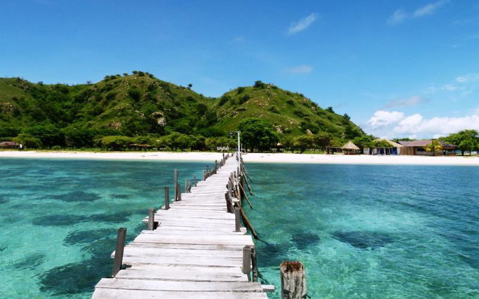

Post by Adytia, Sunday 06 Juny 2018
Siapa sih yang tidak kenal dengan Labuan Bajo? Destinasi wisata unggulan di Indonesia ini memiliki lingkungan yang ramah dan sejuk sangat menjanjikan bagi traveler untuk singgah di tempat ini. Salah satu tempat yang paling terkenal adalah Taman Nasional Komodo, di taman nasional ini wisatawan bisa melihat secara langsung hewan Komodo atau juga disebut sebagai Kadal terbesar di dunia.
Wilayah Nusa Tenggara Timur (NTT) memiliki dataran yang menyajikan bentangan air laut yang sangat luas. Ada beberapa pulau yang bisa kamu kunjungi, salah satu yang menjadi idola ialah Pulau Kanawa. Sekilas namanya hampir sama dengan pulau yang berada di Sumbawa, Nusa Tenggara Barat (NTB) yaitu Pulau Kenewa, namun ternyata memang berbeda.Ketika pertama kali kamu menginjakkan kaki di Dermaga Pulau Kanawa ini akan terlihat laut biru yang bening sebening kaca. Bahkan dari atas dermaga bisa melihat ikan-ikan kecil berenang seakan menyambut wisatawan yang datang, selain itu hamparan terumbu karang yang seakan mengajak wisatawan untuk berenang. Pulau Kanawa memiliki luas 32 hektar menyajikan menyajikan pemandangan alam yang sangat menawan sehingga terlihat seperti pulau pribadi. Pasir putih yang sangat putih dan halus, air laut yang sangat bening, dan bukit kecil dengan rerumputan berwarna cokelat membuat siapapun yang melihatnya akan sangat jatuh cinta. Keindahan lautan yang biru, pasirnya yang putih, dan terumbu karang yang indah, membuat Pulau Kanawa sering dijuluki sebagai 'surga kecil'.
Sumber : https://www.kompasiana.com/bestytam/pulau-kanawa-surga-kecil-di-flores_593e38fc4b0a682e2c72f722